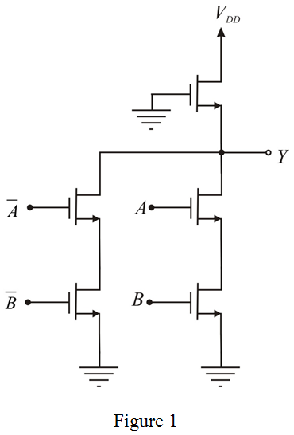

Sketch a pseudo-NMOS realization of the following exclusive-OR function:
The pseudo-NMOS technique always results the complemented outputs. Therefore, modify the function, :
Realize the function.

Thus, the pseudo-NMOS realization is shown in Figure 1.